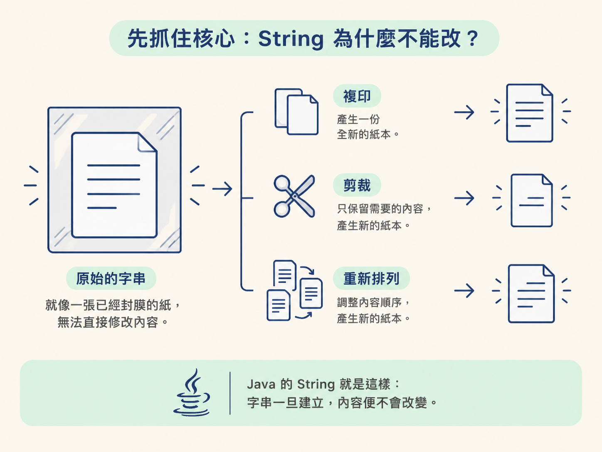
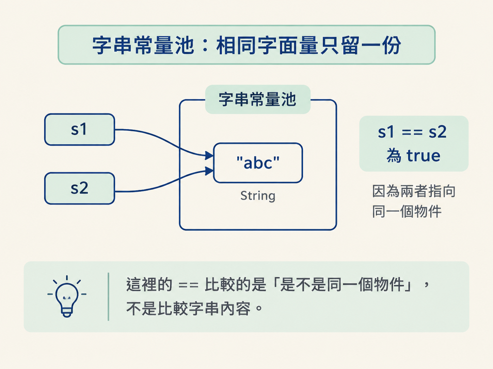
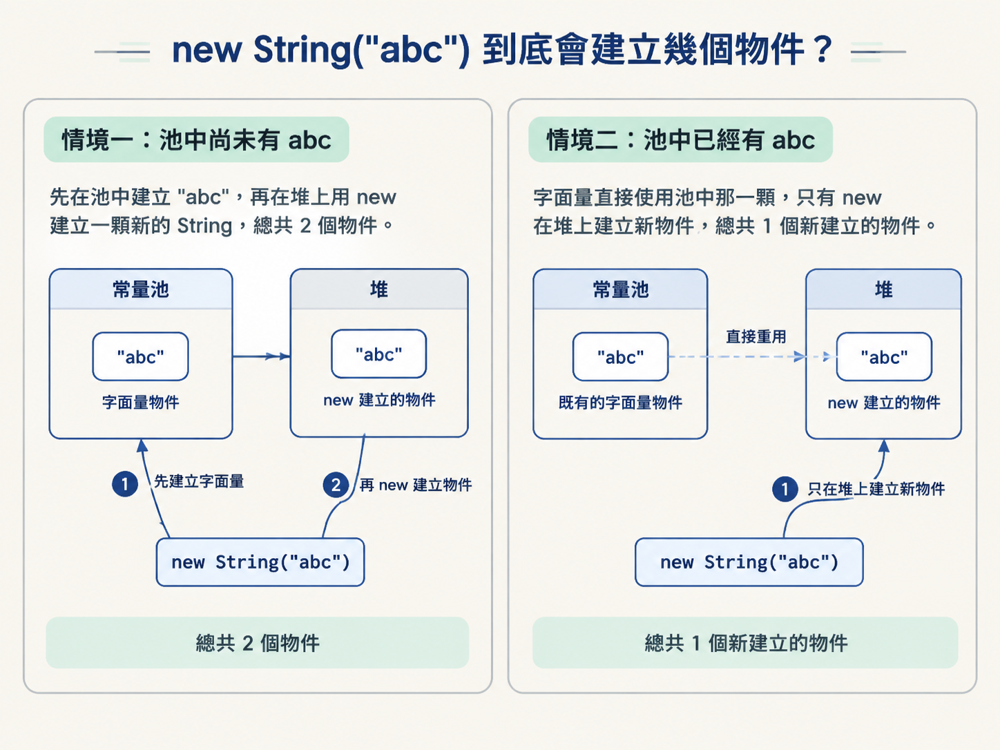
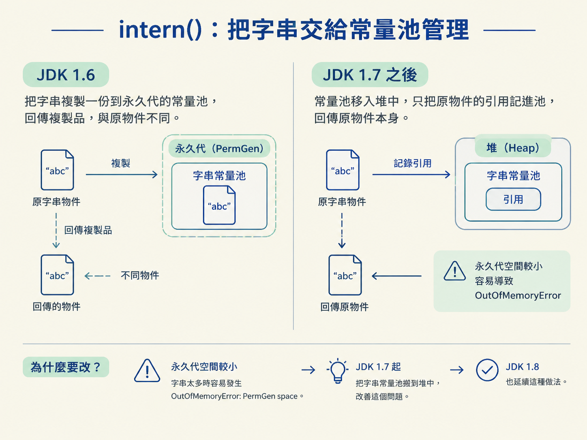
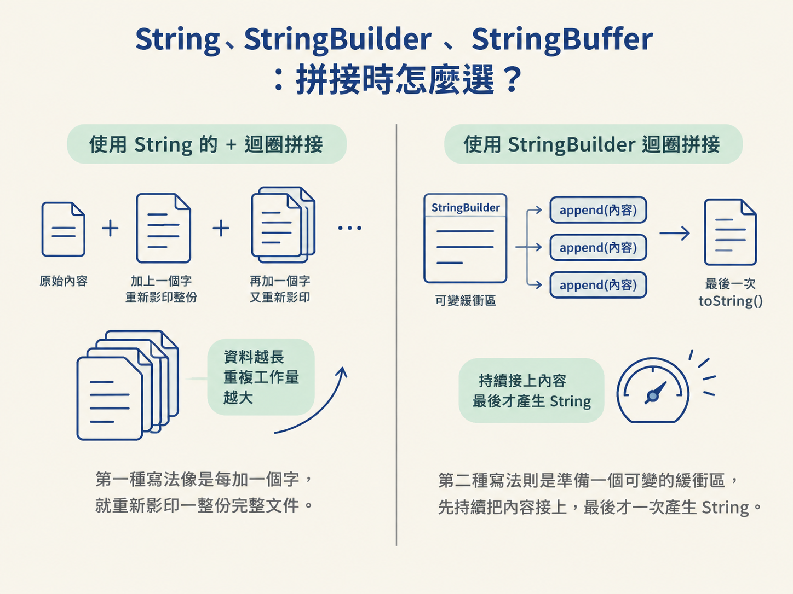

new String 會建立幾個物件、intern() 在不同 JDK 的差異，以及字串拼接該選哪一種工具。
想像 String 是一張已經封膜的紙。你可以拿它去複印、剪裁或重新排列內容，但不能直接把原本那張紙改掉。Java 的 String 就是這樣：字串一旦建立，內容便不會改變。

String 的底層是一個被 final 修飾的字元容器：JDK 8 及以前使用 final char[]，JDK 9 之後則改成更省空間的 byte[]，並搭配一個編碼標記。陣列不能被換掉，String 也不提供修改原內容的方法，因此任何看似「修改」的操作，例如 substring、replace、concat，實際上都是建立並回傳一個新的字串。
這種設計解決了幾個很實際的問題。首先，不可變物件可以安全地被多執行緒共用，不必擔心某個執行緒偷偷改掉其他人的資料。其次，String 的 hashCode 可以計算一次後快取起來，放進 HashMap 時就不必反覆計算。更關鍵的是，字串常量池之所以能讓多個變數共用同一個 String，正是因為這個 String 永遠不會被改寫；否則大家共用同一張紙，任何一個人動筆都可能害其他人看到錯誤內容。
程式裡直接寫出的 "abc" 稱為字串字面量。編譯後，這些字面量會放進字串常量池（String Constant Pool）。相同內容通常只保留一份，之後再遇到相同字面量，就直接拿來共用。
String s1 = "abc";
String s2 = "abc";
System.out.println(s1 == s2); // true，兩者指向池中同一顆這裡的 == 比較的是「是不是同一個物件」，不是比較字串內容。結果為 true，代表 s1 和 s2 指向常量池中的同一顆 String。

這和前面提過的 Integer 快取池是同一種思路：常用、不可變的物件先建立好，之後讓大家共用，避免不必要的配置。
new String("abc") 到底會建立幾個物件？這題不能只背「兩個物件」，因為答案取決於常量池裡原本有沒有 "abc"。要分清楚兩件事：
"abc" 這個字面量可能需要在常量池中留一份。new String(...) 則會強制在堆上建立一個新的 String 物件。因此會有兩種情況：
"abc"：先在池中建立 "abc"，再在堆上用 new 建立一顆新的 String，總共 2 個物件。"abc"：字面量直接使用池中那一顆，只有 new 在堆上建立新物件，總共 1 個新建立的物件。
String s = new String("abc");
// new 出來的物件和池中的 "abc" 位址不同
System.out.println(s == "abc"); // false
System.out.println(s.equals("abc")); // true這段程式正好呈現兩個比較方式的差異：== 比較參照位置，所以結果是 false；equals 比較內容，因此結果是 true。
intern()：把字串交給常量池管理intern() 可以理解成「去常量池查同款」。如果池裡已經有內容相同的字串，就回傳池中的那一顆；如果沒有，就把這顆字串放進池裡，再回傳池中的參照。
面試常追問 JDK 1.6 和 JDK 1.7 之後的差異，關鍵在於：JDK 1.7 起，常量池移到堆中，池裡可以記錄原物件的引用，而不一定要再複製一份。
| 版本 | intern 的做法 | 結果 |
|---|---|---|
| JDK 1.6 | 把字串複製一份到永久代（PermGen）的池中 | 回傳的是池中那份複製品，和原物件不同一顆 |
| JDK 1.7 以後 | 池移到堆裡，只把「原物件的引用」記進池 | 回傳的就是原物件本身，位址相同 |
String s = new String("abc");
System.out.println(s.intern() == "abc"); // true
// JDK 1.7 起，intern 回傳的引用就等於 s 自己
System.out.println(s.intern() == s); // 1.7 之後為 true，1.6 為 false為什麼要改？其中一個原因是永久代空間較小，字串太多時容易出現 OutOfMemoryError: PermGen space。JDK 1.7 把字串常量池搬到堆中，便改善了這部分問題；JDK 1.8 也延續這種做法。

String 不可變，所以每次用 + 拼接，都可能產生新的 String。單一運算式中的 +，編譯器有機會幫你最佳化成 StringBuilder；但如果是在迴圈裡反覆累加，前一次的結果每次都要再產生新字串，成本會隨迴圈次數增加。
// 壞味道：迴圈裡每次 + 都產生新字串
String result = "";
for (String word : words) {
result += word;
}
// 好味道：同一顆 StringBuilder 累積
StringBuilder sb = new StringBuilder();
for (String word : words) {
sb.append(word);
}
String result2 = sb.toString();第一種寫法像是每加一個字，就重新影印一整份完整文件；資料越長，重複工作的量越大。第二種寫法則是準備一個可變的緩衝區，先持續把內容接上，最後才一次產生 String。

| 類別 | 可變性 | 執行緒安全 | 適用場景 |
|---|---|---|---|
| String | 不可變 | 安全（因為不可變） | 內容固定、少量拼接 |
| StringBuilder | 可變 | 不安全 | 單執行緒大量拼接 |
| StringBuffer | 可變 | 安全（方法加 synchronized） | 多執行緒共用同一個緩衝區 |
效能大致可以記成：StringBuilder 快於 StringBuffer，而兩者都遠快於反覆使用 String 的 +。一般情況直接選 StringBuilder；只有確定同一個緩衝區會被多執行緒共用時，才考慮 StringBuffer。
String 的不可變性，是字串常量池、hashCode 快取與執行緒安全的地基。字串字面量可以共用；new String 則一定會在堆上建立新的物件。intern() 在 JDK 1.7 之後能直接記錄原物件的引用，不再一定複製一份。至於大量拼接，別在迴圈裡反覆使用 +：單執行緒用 StringBuilder，需要同步保護時再考慮 StringBuffer。